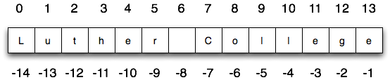

3.3. Accessing Sequence Data¶
As lists and strings are collections of items, it would be useful to have a method for accessing the individual elements of the sequence. In this section we introduce both methods of accessing data from Python sequences: indexing for a single element and slicing for a sub-sequence.
3.3.1. Index Operator¶
The indexing operator (Python uses square brackets to enclose the index) selects a single character from a string. The characters are accessed by their position or index value. For example, in the string shown below, the 14 characters are indexed left to right from position 0 to position 13.
It is also the case that the positions are named from right to left using negative numbers where -1 is the rightmost index and so on. Note that the character at index 6 (or -8) is the blank character.
In [1]: school = "Luther College"
In [2]: school[2]
Out[2]: 't'
In [3]: school[-1]
������������Out[3]: 'e'
The expression school[2] selects the character at index 2 from school,
and creates a new string containing just this one character. The variable m
refers to the result.
The expression in brackets is called an index. An index specifies a member of an ordered collection. In this case the collection of characters in the string. The index indicates which character you want. It can be any integer expression so long as it evaluates to a valid index value.
Note that indexing returns a string — Python has no special type for a single character. It is just a string of length 1.
As shown above, the syntax for the indexing operator in Python uses brackets to surround the desired index.
SEQUENCE[ INDEX ]
Python uses the following rules to evaluate an indexing expression.
- Evaluate SEQUENCE
- Evaluate INDEX
- Get and return the index element.
In the process, the interpreter will make sure that SEQUENCE evaluates to a list and the INDEX is in the proper range of values.
Note that SEQUENCE can be any python expression that evaluates to a sequence, be that a variable that refers to a sequence, the literal expression of a sequence, or a function that returns a sequence.
In [4]: my_list = [1, 2, 3]
In [5]: my_list[2] # Sequence stored in a variable
Out[5]: 3
In [6]: "aeiou"[1] # Indexing with the literal string expression
����������Out[6]: 'e'
In [7]: f = lambda x: "***" + str(x) + "***"
In [8]: f(12)
Out[8]: '***12***'
In [9]: f(12)[-4] # indexing a string returns by a function
�������������������Out[9]: '2'
Similarly, the INDEX can be any expression that evaluates to an integer,
provided the result in the right range for the sequence in questions. Remember
that computer scientists often start counting from zero. The letter at index
zero of "Luther College" is L. So at position 2 we have the letter
t.
For example, if you want the zero-eth letter of a string, you just put 0, or any expression with the value 0, in the brackets.
In [10]: school = "Luther College"
In [11]: school[0]
Out[11]: 'L'
In [12]: school[1 - 1]
�������������Out[12]: 'L'
Check your understanding
- (A) t
- Index locations do not start with 1, they start with 0.
- (B) h
- Yes, index locations start with 0.
- (C) c
- s[-3] would return c, counting from right to left.
- (D) Error, you cannot use the [ ] operator with a string.
- [ ] is the index operator
rec-5-5: What is printed by the following statements?
s = "python rocks"
print(s[3])
- (A) tr
- Yes, indexing operator has precedence over concatenation.
- (B) ps
- p is at location 0, not 2.
- (C) nn
- n is at location 5, not 2.
- (D) Error, you cannot use the [ ] operator with the + operator.
- [ ] operator returns a string that can be concatenated with another string.
rec-5-6: What is printed by the following statements?
s = "python rocks"
print(s[2] + s[-5])
- (A) [ ]
- The empty list is at index 4.
- (B) 3.14
- Yes, 3.14 is at index 5 since we start counting at 0 and sublists count as one item.
- (C) False
- False is at index 6.
rec-5-7: What is printed by the following statements?
alist = [3, 67, "cat", [56, 57, "dog"], [ ], 3.14, False]
print(alist[5])
- (A) Error, you cannot use the upper method on a list.
- alist[2] is the string cat so the upper method is legal
- (B) 2
- 2 is the index. We want the item at that index.
- (C) CAT
- Yes, the string cat is upper cased to become CAT.
rec-5-8: What is printed by the following statements?
alist = [3, 67, "cat", [56, 57, "dog"], [ ], 3.14, False]
print(alist[2].upper())
- (A) 56
- Indexes start with 0, not 1.
- (B) c
- Yes, the first character of the string at index 2 is c
- (C) cat
- cat is the item at index 2 but then we index into it further.
- (D) Error, you cannot have two index values unless you are using slicing.
- Using more than one index is fine. You read it from left to right.
rec-5-9: What is printed by the following statements?
alist = [3, 67, "cat", [56, 57, "dog"], [ ], 3.14, False]
print(alist[2][0])
3.3.2. The Slice Operator¶
A substring of a string is called a slice. Selecting a slice is similar to selecting a character:
In [13]: singers = "Peter, Paul, and Mary"
In [14]: singers[0:5]
Out[14]: 'Peter'
In [15]: singers[7:11]
�����������������Out[15]: 'Paul'
In [16]: singers[17:21]
���������������������������������Out[16]: 'Mary'
The slice operator sequence[n:m] returns the part of the string from the
n’th character to the m’th character, including the first but excluding the
last. In other words, start with the character at index n and go up to but
do not include the character at index m.
If you omit the first index (before the colon), the slice starts at the beginning of the string. If you omit the second index, the slice goes to the end of the string.
In [17]: fruit = "banana"
In [18]: fruit[:3]
Out[18]: 'ban'
In [19]: fruit[3:]
���������������Out[19]: 'ana'
What do you think fruit[:] means?
The slice operation also work on lists.
In [20]: a_list = ['a', 'b', 'c', 'd', 'e', 'f']
In [21]: a_list[1:3]
Out[21]: ['b', 'c']
In [22]: a_list[:4]
��������������������Out[22]: ['a', 'b', 'c', 'd']
In [23]: a_list[3:]
��������������������������������������������������Out[23]: ['d', 'e', 'f']
In [24]: a_list[:]
���������������������������������������������������������������������������Out[24]: ['a', 'b', 'c', 'd', 'e', 'f']
The syntax for the slice operator is similar to that of the indexing operator and uses brackets to surround the desired indexes, but a slice needs to specify a starting and ending index
SEQUENCE[STARTING_INDEX:STOP_BEFORE_INDEX]
Python uses the following rules to evaluate an slicing expression.
- Evaluate SEQUENCE
- Evaluate STARTING_INDEX, using 0 as the index if omitted.
- Evaluate STOP_BEFORE_INDEX, using len(SEQUENCE) as the index if omitted.
- Get and return the requested sub-sequence of the same type as SEQUENCE
In the process, the interpreter will make sure that SEQUENCE evaluates to a sequence and the indexes are in the proper range of values. Note integers that are larger than the length of the sequence are valid!
In [25]: short_word = "the"
In [26]: short_word[1:1000000]
Out[26]: 'he'
Again, the SEQUENCE can be any python expression that evaluates to a sequence and the indexes can be any expression that evaluated to an appropriate integer.
Check your understanding
- (A) python
- That would be s[0:6].
- (B) rocks
- That would be s[7:].
- (C) hon r
- Yes, start with the character at index 3 and go up to but not include the character at index 8.
- (D) Error, you cannot have two numbers inside the [ ].
- This is called slicing, not indexing. It requires a start and an end.
rec-5-10: What is printed by the following statements?
s = "python rocks"
print(s[3:8])
- (A) rockrockrock
- Yes, rock starts at 7 and goes through 10. Repeat it 3 times.
- (B) rock rock rock
- Repetition does not add a space.
- (C) rocksrocksrocks
- Slicing will not include the character at index 11. Just up to it (10 in this case).
- (D) Error, you cannot use repetition with slicing.
- The slice will happen first, then the repetition. So it is ok.
rec-5-11: What is printed by the following statements?
s = "python rocks"
print(s[7:11] * 3)
- (A) [ [ ], 3.14, False]
- Yes, the slice starts at index 4 and goes up to and including the last item.
- (B) [ [ ], 3.14]
- By leaving out the upper bound on the slice, we go up to and including the last item.
- (C) [ [56, 57, "dog"], [ ], 3.14, False]
- Index values start at 0.
rec-5-12: What is printed by the following statements?
alist = [3, 67, "cat", [56, 57, "dog"], [ ], 3.14, False]
print(alist[4:])
3.3.3. Nested Lists¶
A nested list is a list that appears as an element in another list. In this
list, the element with index 3 is a nested list. If we print(nested[3]), we
get [10, 20]. To extract an element from the nested list, we can proceed in
two steps. First, extract the nested list, then extract the item of interest.
It is also possible to combine those steps using bracket operators that evaluate
from left to right.
In [27]: nested = ["hello", 2.0, 5, [10, 20]]
In [28]: innerlist = nested[3]
In [29]: innerlist
Out[29]: [10, 20]
In [30]: item = innerlist[1]
In [31]: item
Out[31]: 20
In [32]: nested[3][1]
������������Out[32]: 20
Check your understanding
- (A) 6
- 6 is in the wrong list. alist[1] refers to the second item in alist, namely [888,999].
- (B) 8
- 8 is in the wrong list. alist[1] refers to the second item in alist, namely [888,999].
- (C) 888
- Yes, alist[0][1][0] is True and alist[1] is the second list, the first item is 888.
- (D) 999
- alist[0][1][0] is True. Take another look at the if statement.
rec-5-13: What is printed by the following statements?
alist = [ [4, [True, False], 6, 8], [888, 999] ]
if alist[0][1][0]:
print(alist[1][0])
else:
print(alist[1][1])
Note
This workspace is provided for your convenience. You can use this activecode window to try out anything you like.